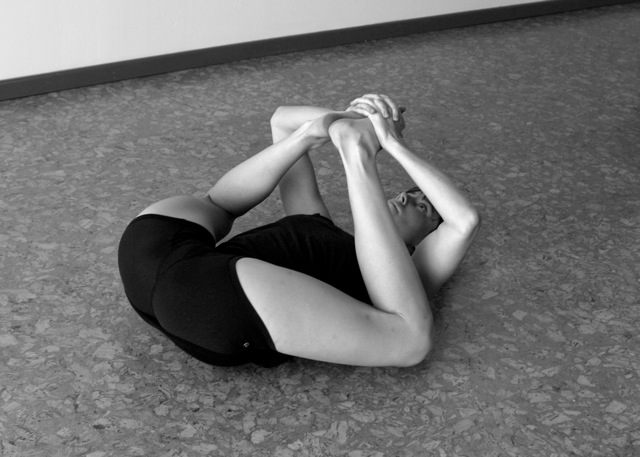
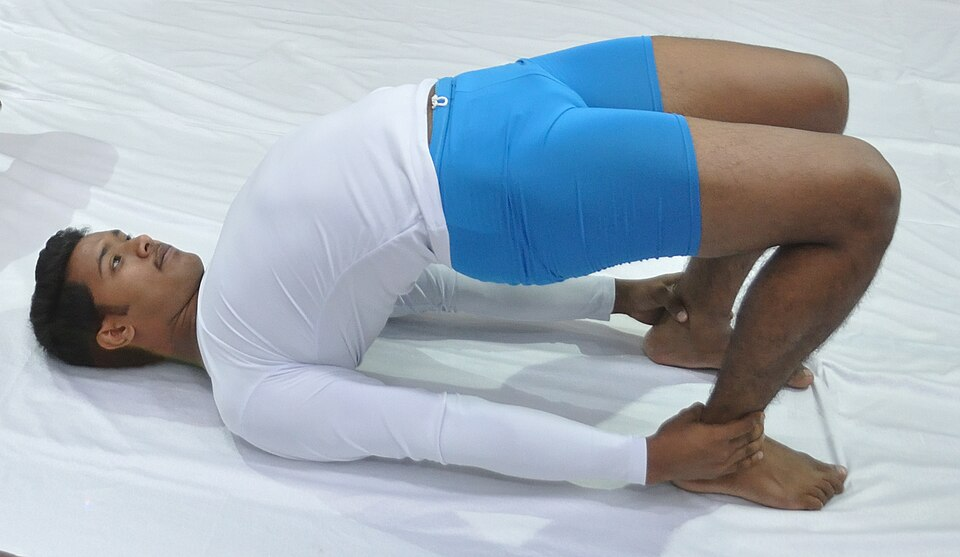
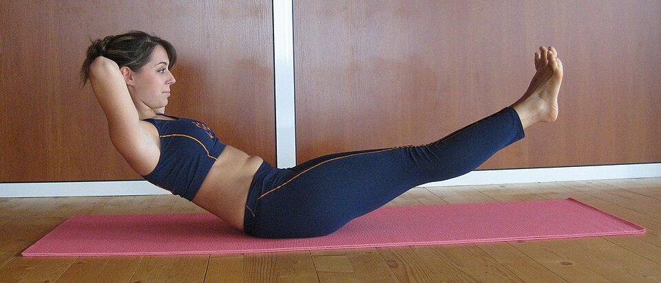
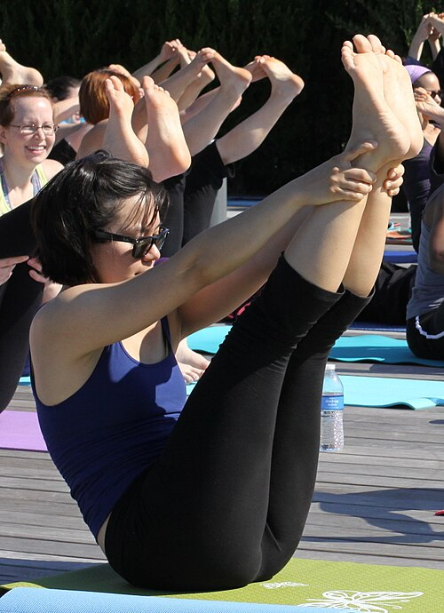
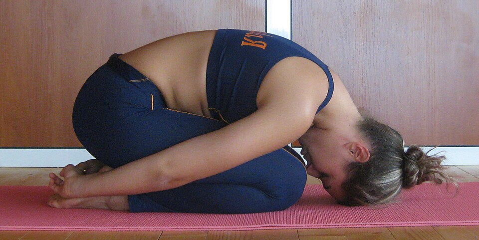
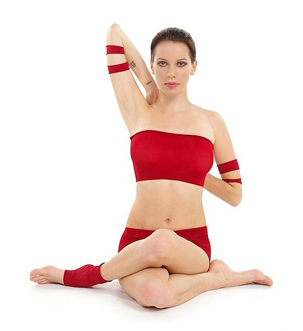
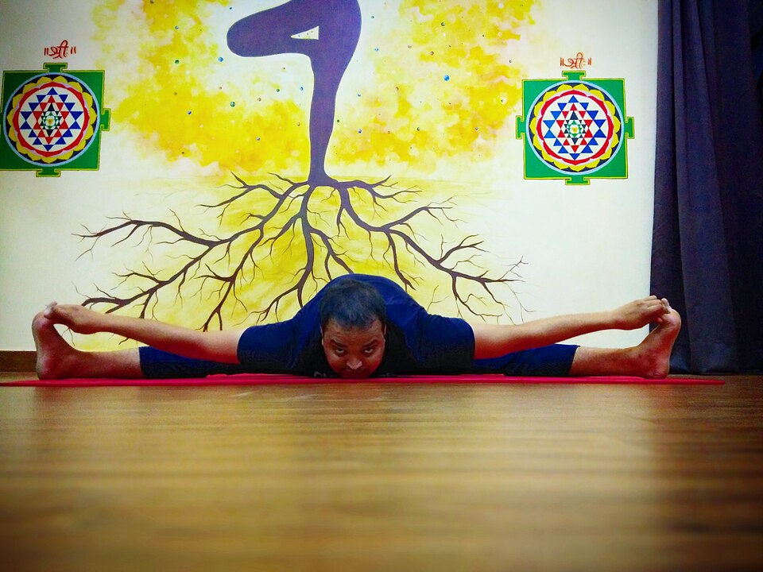
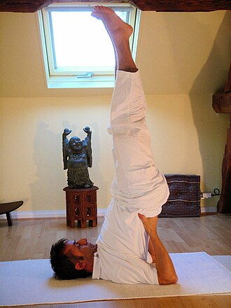
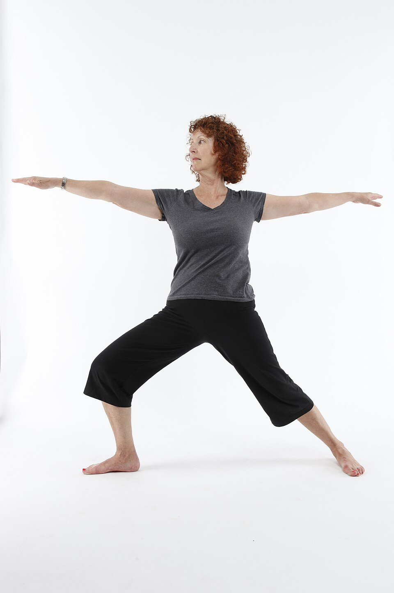

Приложение для практики — варианты интерфейса
Три экрана на основе программы Саджи. Это макет для обсуждения: экраны кликабельны, данные условные.
А. Страница со схемой
Список асан с картинками. Каждый занимается сам, в своём темпе. Забыл позу — нажал и посмотрел.
Разминка

Суставная разминкаsūkṣma vyāyāma
1
Приветствие солнцуsūrya namaskāra
2
Кошка — короваmārjārīāsana — bitilāsana
3
Поза тиграvyāghrāsana
4Лёжа на спине

Поочерёдный подъём ногeka pāda uttānapādāsana
5
Подъём двух ногuttānapādāsana
6
Колено к грудиpavanamuktāsana
7
Счастливый ребёнокānanda bālāsana
8Нога вверх с захватомsupta pādāṅguṣṭhāsana
9
Полумостsetu bandhāsana
10
Скручивание лёжаjaṭhara parivartanāsana
11
Низкая лодкаardha nāvāsana
12
Лодка с захватом пальцевubhaya pādāṅguṣṭhāsana
13Лёжа на животе

Поза крокодилаmakarāsana
14
Сфинксsālamba bhujaṅgāsana
15
Кобраbhujaṅgāsana
16
Лукdhanurāsana
17Переход

Поза ребёнкаbālāsana
18
Собака мордой внизadho mukha śvānāsana
19
Голубьeka pāda rājakapotāsana
20Лёжа на боку

Поза Вишнуanantāsana
21Сидя

Наклон к одной ногеjānu śīrṣāsana
22
Наклон к двум ногамpaścimottānāsana
23
Скручивание сидяardha matsyendrāsana
24
Коровья мордаgomukhāsana
25
Ноги в стороныupaviṣṭa koṇāsana
26
Бабочкаbaddha koṇāsana
27Перевёрнутые

Плугhalāsana
28
Берёзкаsarvāṅgāsana
29
Полуберёзкаviparīta karaṇī
30
Поза рыбыmatsyāsana
31Стоя

Поза воинаvīrabhadrāsana
32
Треугольникtrikoṇāsana
33
Наклон к передней ногеpārśvottānāsana
34
Деревоvṛkṣāsana
35Расслабление

Шавасанаśavāsana
36Дыхание и медитация

Капалабхатиkapālabhāti
37
Нади шодханаnāḍī śodhana
38
Бхастрикаbhastrikā
39
Бхрамариbhrāmarī
40
Наблюдение за дыханиемdhyāna
41Б. Ведущий с таймером
Голос объявляет раздел и асану, идёт отсчёт времени, потом «переходим дальше». Работает: нажми «Начать».
0:00
В. Огонь практики
Главный экран: огонь и число дней подряд. Отмечает регулярность, а не результат.
🔥
12дней подряд
Абхьяса и вайрагья: постоянная практика без привязанности к результату.
Что проще всего сделать
- Начать с веб-страницы, а не с приложения. Варианты А и Б — это одна страница на сайте. Её можно добавить на домашний экран телефона, и она выглядит как приложение. Магазины приложений, регистрация и сервер не нужны.
- Ведущий (Б) делается без записи диктора. В этом макете текст читает встроенный голос телефона. Позже его можно заменить на записанный голос Саджи или инструктора.
- Огонь (В) тоже работает без сервера, пока счёт дней хранится на телефоне. Сервер и учётные записи нужны только для четвёртого шага идеи — друзей.
- Видео встраивается в шаг вместо картинки, когда появятся записи. До тех пор хватает фото.
Время на каждую асану в макете условное (всего около 43 минут): его нужно взять из исходной 40-минутной записи.